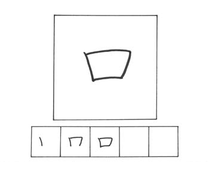
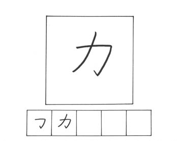

KUCHI / くち
goresan : 3
arti : mulut
kunyomi : kuchi
onyomi : kou
kotoba :
入り口 iriguchi / pintu masuk
口語 kougo / bahasa percakapan
タメ口 tameguchi / bahasa sebaya
口紅 kuchibeni / lipstick
非常口 hijouguchi / pintu darurat

CHIKARA / ちから
goresan : 2
arti : tenaga
kunyomi : chikara
onyomi : ryoku, riki
kotoba :
重力 juuryoku / gravitasi
力士 rikishi / pesumo/orang kuat
能力 nouryoku / kemampuan
体力 tairyoku / kekuatan fisik

ASHI / あし
goresan : 7
arti : kaki
kunyomi : ashi
onyomi : soku
kotoba :
足跡 ashiato / jejak kaki
足首 ashikubi / mata kaki
足し算 tashizan / tambahan
不足 fusoku / ketidak cukupan